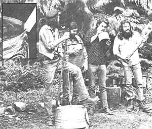
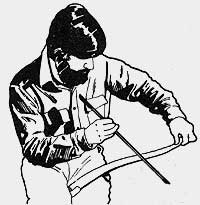

Marc Bristol and other Washington State grassroots musicians wail away on a gutbucket, washboard, and jug (the axe is a gag). For Marc's original homegrown music Column-which featured gutbucket, washboard, jug, kazoo, musical saw, and spoons "makin' and playin' "instructions-see MOTHER NO. 50. Inset shows gutbucket "notch and bevel ''details.
Even homesteaders need to relax and enjoy themselves from time to time, right? And almost everybody these days wants to cut his or her cost of living. So how about a little do-it-yourself entertainment?
And that's what this column is all about. Down-home music that you can make . . . and the instruments (which, in some cases, you can also make!) to play that music on.
We may also publish some songs, discuss music as a potential home business, run discographies, bibliographies, and/or include whatever other do-it-yourself music topics you'd like to see.
The important thing is that this is your column. If you like it, write to me and let me know. If you have some ideas for this feature, let me know that. I'm open to any suggestions or information you care to contribute. I'll even try to answer your questions about down-home music . . . but-both for the benefit of all MOTHER's readers and to ease my correspondence load-I'll deal with those questions, whenever possible, here in this column . . . rather than in personal letters.
Address your correspondence- for this column and this column only-to Marc Bristol, 31722 N.E. 180th Place, Duvall, Wash. 98019.
Back in the early part of this century, the beautiful, wailing sounds of musical saws were heard in many vaudeville shows and dance orchestras. Then along came all the various sophisticated (and expensive) Hawaiian, do bro, and pedal slide guitars, and the art of coaxing melodies from woodcutting hand tools was almost forgotten.
Today, I'm happy to report, musical saw playing is one "dying art" that's coming back to life! In fact, I had the unique pleasure-last Labor Day weekend-of attending the annual musical saw festival in Santa Cruz, California . . . a two-day gala event that was filled with the plaintive strains of the dual-purpose implement.
Santa Cruz was especially exciting because amateur "sawyers" played right alongside such record-cutting professionals as Margaret Steinbuch (I mentioned her in my column in MOTHER NO. 60), Moses Josiah, Robert Armstrong (who plays with the Cheap Suit Serenaders and recorded the theme for the movie "One Flew Over the Cuckoo's Nest"), and the festival's originator, Tom Scribner (who's played with the likes of Leon Russell and George Harrison ... and been honored by having a bronze statue of himself, playing a saw, erected in a Santa Cruz park).
Then, to top off the two days of fine performances and information-packed workshops, the festival's grand finale featured 25 musical saw players-all performing on stage at once-and was photographed for the Guinness Book of World Records as the largest congregation of such musicians ever! (I figure that the record will stand . . . at least until the even bigger and better festival planned for 1980!)
Some of you may well be wondering, "Just how difficult is musical saw playing?" The answer, surprisingly enough, is that it's really not at all hard to make music-and frequently good music, at that-on a common, everyday boardtearing hand tool. The fact is that just about anyone can learn to rhapsodize on the cutting instrument . . . and that just about any handsaw can be turned into a tuneful tool!
That's right . . . you don't need some finely honed $600 instrument for this kind of downhome musicmaking. In fact, according to one famous saw player Charlie Black- lock of Alameda, California-even a rusty, old tool shed reject might be a potential melody-maker.
Since I'm a carpenter by trade, I have access to a lot of handsaws, so I put Mr. Black lock's statement to the test. And to tell the truth-I found that my rustiest junkyard saw was so marginally playable that trying to make sweet harmony with it would probably prove frustrating to a beginner. (A good buffing job, however, might improve the tool's resonating qualities.) Other than that one, though, all the saws I tried-including an inexpensive, plastic-handled model were perfectly playable.
As it turned out, my own favorite wood-cutter Sandvik saw-was the best hardware-shelf musical instrument that I tested. (By the way, you can still use your tool for sawing without harming its musical properties. In fact, the more "exercise" your cutter gets, the more flexible and easy-it'll be to play.)
Once you've scrounged up a good tune maker, you'll need a striker (which is easy to make) to play your instrument with. Just drill a small hole in one end of a two-inch piece of broomstick . . . glue a lead pencil (or a five- or six-inch length of 1/4-inch dowel) in the opening to serve as a handle . . . and cover the mallet's head with a 1/4-inch-thick piece of felt like material.
When all your equipment's ready, sit down and place the handle of the saw between your legs. Face the tool's teeth toward your body (for obvious reasons, you'll be playing the back-not the front -edge of the saw), slant the instrument at about a 45° angle (in other words, if you're right-handed, the handle of the saw should butt against your right inner thigh . . . elevate your right knee slightly to get the correct "slope"), and hold the saw's tip in your left hand. (If you're a "south saw", you should-of course-reverse the instructions.)
Now exert pressure with the thumb of your left hand-at a point about two inches down the blade-while you pull up on the saw's tip with your fingers. At the same time, bend the whole curved-between-thumb and-fingers end of the saw away from you. This action will give the tool's face a double curve-sort of like a very bottom-heavy S-shape-with the blade's big, lower bulge curving toward your body.
To make a note, simply strike the metal just above the top of the big curve. If you want to produce high notes, bend the tip farther toward the floor and strike the blade out toward its end. To get lower notes, on the other hand, just bend the curved tip toward the ceiling and hit the blade nearer the handle.
Once you know how to play some notes, you'll be able to start "sounding out" easy tunes. Keep 'em slow and simple at first. The folks at Mussehl & Westphalwho make quality musical saws-suggest opening numbers such as "Home, Sweet Home" and "Aloha-Oe", but I feel strongly that any person who starts to master a musical instrument should have the immediate gratification of playing music that he or she likes. . . so by all. means feel free to try some of your own simple favorites.
While you're figuring out the first songs in your saw repertoire, you'll also want to learn how to produce the expressive, quavering sound effect known as vibrato. Most players quiver their sawbutt-holding leg to achieve the "trembling" quality, but a few-like master sawyer, Tom Scribner- produce a vibrato effect by "shivering" the blade's tip. Either way, if you practice long enough, you'll eventually perfect the technique.
After you've gotten some tune making experience, you may want to replace the striking tone of a mallet with the continuous sound that a saw can produce when it's played with a bow. You can use a simple homemade string "player" (like a young child's arrow shooting toy) or go the high-class-and finer sounding route and employ a real live fiddle bow. In either case, work a good layer of rosin the substance all violinists use-on the bow before you start to play.
Then simply draw the sound-evoker across the edge of the saw in the same places that you would strike with the hammer. Although you may need to bear down a little initially-to set the saw vibrating-be sure to let up on the pressure as soon as you can . . . or your bow strings won't last long.
You may also-after a while-decide you're ready to move up to the professional league . . . and buy a genuine made-for-music saw. Such instruments will produce more volume than will the hardware-store crooners, and-because they're longer than ordinary saws-they have a greater range, too . . . sometimes as much as two octaves.
You may even be lucky enough to find a classic old musical saw-such as a 1921 gold-plated, rhinestone-studded Mussehl & Westphal or the Sandvik "Stradivarius" mode lat a secondhand store (one of my neighbors recently did just that!). If not, you can write off for information about purchasing either a Mussehl & Westphal (the company address is Dept. TMEN, Fort Atkinson, Wisconsin 53538) or a C. Black lock Special (available from Charlie Black lock himself . . . at Dept. TMEN, 1821 St. Charles Street, Alameda, California 94501). Be sure to send a self-addressed, stamped envelope-and a dollar for their trouble when asking for information from either of the small companies.
The M & W saw is made from English steel and comes complete with three pages of instructions, mallet, dowel bow, string, extra string, rosin cake, and a vinyl carrying case for $31.50. (If you live west of Denver, add $1.00 for extra freight charges . . . folks living outside the continental U.S. should add $2.00 for shipping ... and Wisconsin residents must tack on 4%, state sales tax.) You can buy the saw without all the accouterments for $15.85.
Charlie Black lock worked out a special arrangement with Alameda's Valley Saw Company for the manufacture of his musical woodcutters, because that firm uses what he considers to be the most tuneful metal available: Swedish steel. Charlie couldn't decide on a single nationwide freight charge, but $22 should cover the cost of the saw and shipping if you live in the U.S. east of California. If you reside in California-or outside the continental United States-write Mr. Black lock for an exact price.
Those of you who happen to catch the playing bug (or who are already "stricken") may wish to learn the dates for next year's musical saw festival. To get that information, send a self-addressed, stamped envelope to Sea & Saw Productions (Dept. TMEN, 217 Laguna Street, Santa Cruz, California 95060). When the date is set, those folks will send you their press release. I guarantee that you'll have a good time if you're able to make it to the event. This year's festival featured workshops in tub bass, bones, spoons, washboard, harmonica, kazoo, penny whistle, steel guitar, songwriting, and song swapping . . . as well as beginning, intermediate, and advanced musical saw instruction.
In fact, the festival was so inspiring that I'm thinking of organizing a similar homemade-instrument-oriented get. together up in my neck of the woods. So, if you want to contribute some ideas or enthusiasm to this budding event (or just learn more about my plans), by all means write or send me an SASE.
Who knows, maybe our festival will be the one to set a new Guinness world record for simultaneous saw playing!
Billy Hults has asked me to help him work on a book about the art of washboard playing. If you have pictures of wash-boarders you'd like to see enshrined in our volume . . . know some interesting related lore (information about famous or obscure players, particular setups, recordings, etc.) . . . or want to help us form a possible washboard and homemade instruments road-show/workshop, please write to us at my address.
Also, David Halbakken of Mountain View, California wrote in response to my column, "Axe Repair for Homegrown Musicians" (MOTHER NO. 59, page 124) to tell me about a fine guitar-building book I left out of my listings. According to David, the well-illustrated construction techniques in Irving Sloane's Steel-String Guitar Construction (E.P. Dutton & Co., Inc., Dept. TMEN, 201 Park Avenue South, New York, New York 10003 . . . $11.95) "are presented in a very professional and concise manner and would be quite useful to the beginner".
|
 |
 |
|